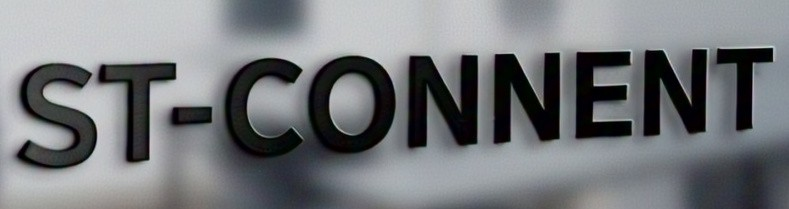

ST-Connect is SoftTech’s all-in-one online meeting platform designed for seamless video conferencing, webinars, and virtual team collaboration. Built to keep teams productive and connected from anywhere, ST-Connect combines performance with simplicity.
Key features of ST-Connect include:
Whether you're hosting a business call or teaching a virtual class, ST-Connect offers a smooth, professional, and secure online meeting experience — powered by SoftTech.